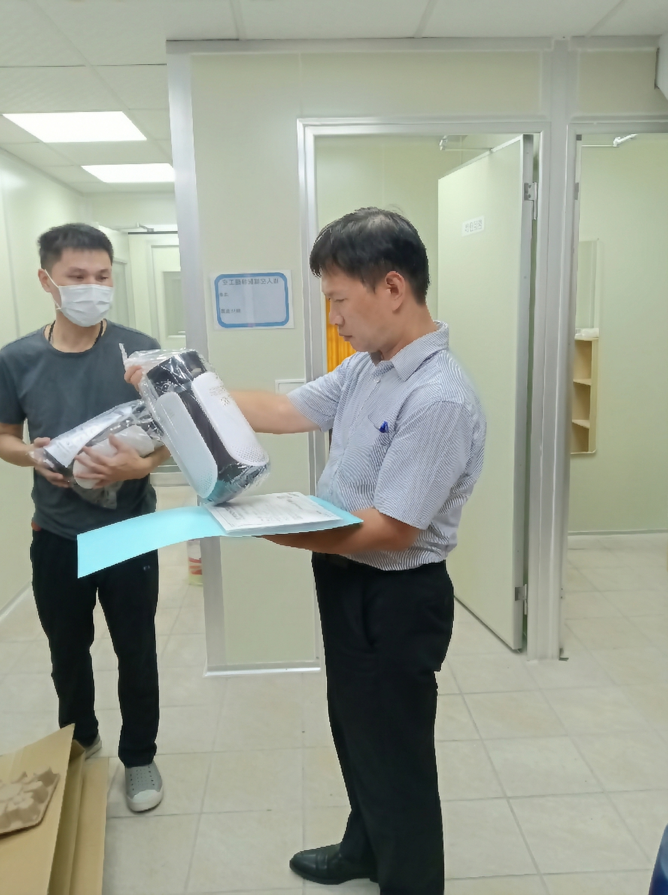
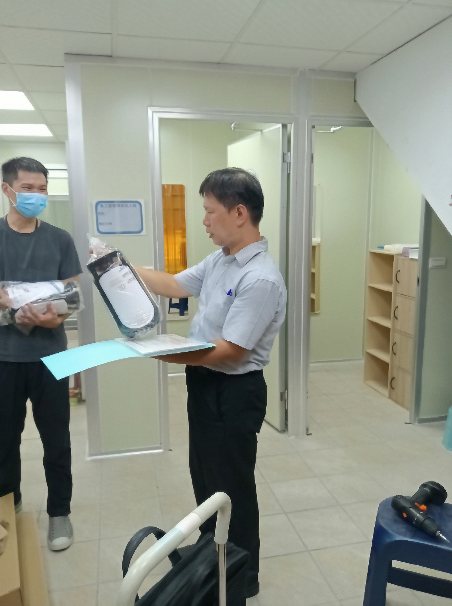

融合20年在地經驗，我們將繁瑣流程化為您的成功基石。從選址到營運，全程專業陪伴。
了解我們的服務一站式整合服務
🏢
廠房規劃與設計
依據製程需求與法規，打造最高效、合規的生產動線與空間配置。結合現代化3D模擬技術。
📜
法規諮詢與代辦
精準掌握最新食安法規，處理繁瑣的工廠登記與文件申請，確保零失誤、高效率。
🤝
在地溝通協調
憑藉多年經驗，有效與主管機關溝通，確保會勘審查順利通過，減少來回補件時間。
最新法規動態

焦點
自行製造販售食品規範
從事食品加工製造及販售，應以符合食安法及GHP準則為前提...

作業區門禁管理
各作業區的門需隨時關閉且密合度需良好，避免交叉污染...

成品留樣保存規定
應訂定有效日期，並將產品留樣保存至有效日期...

分裝與改包裝之定性
若分裝製程足以影響產品衛生安全，認屬為食品製造業...

原料倉儲溫度管制
有管制溫溼度必要者，應訂定合理基準並定期檢查...

留樣室設置規範
法規雖未硬性規定，但應設置適當環境以確保樣品品質...
關鍵查核點

九大程序書
衛生、製程、倉儲等管理程序書之建立與執行。

合法登記
工廠登記證及食品業者登錄資料需與現況一致。

環境衛生
落實分區管理、防鼠蚊設施及定時清潔消毒。

追溯追蹤
建立從原料到成品出貨的完整履歷紀錄。
*點擊卡片查看詳細說明與更多項目
廠房規劃指南
工廠設立藍圖
1. 用地查核查核土地是否工業/產業用地，並確認地號與分區。
2. 都市計畫審查許可申請土地分區證明及使用性相關審查，避免日後違法。
3. 成立公司或商號登記依實際營運型態完成辦理，取得營業統編。
4. 工廠空間規劃設計產線動線、結構安全、消防動線。
5. 申請建照與使用執照建照須經官方審核，確保建物用途合格。